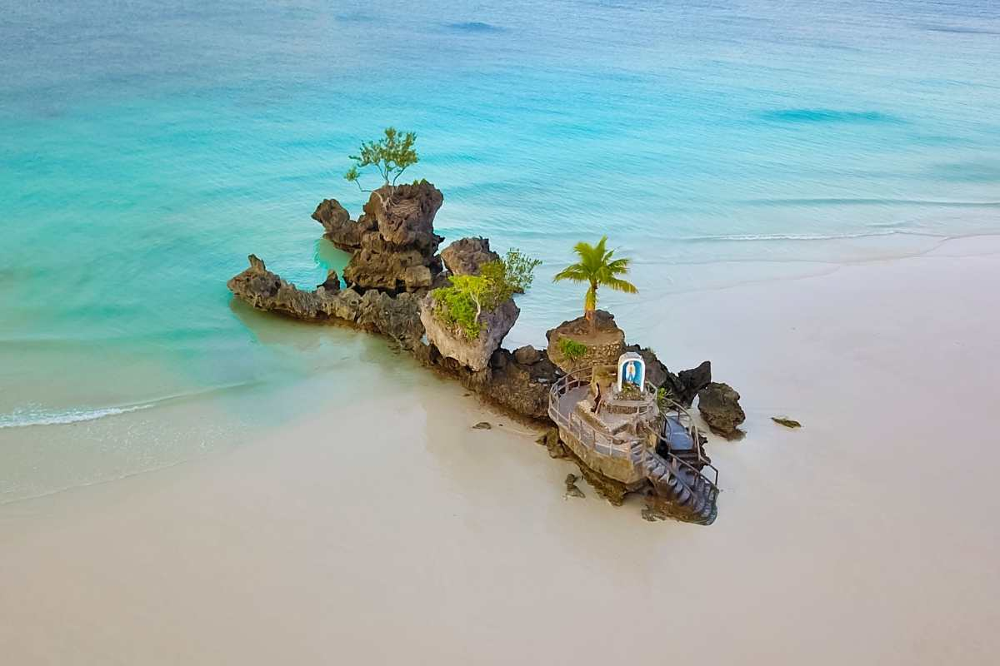
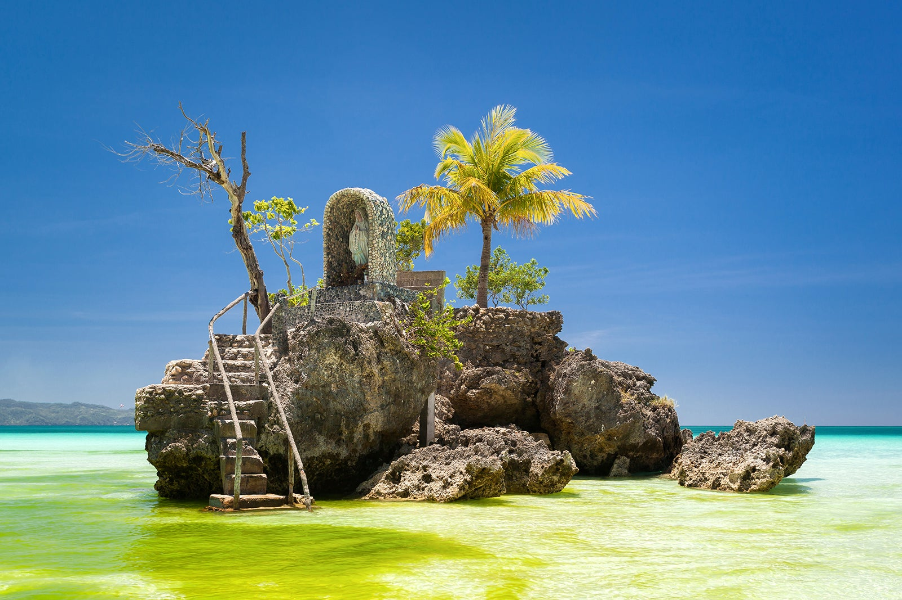
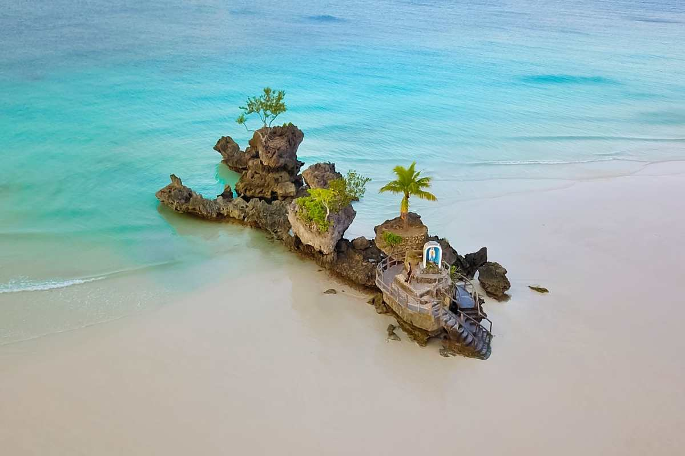
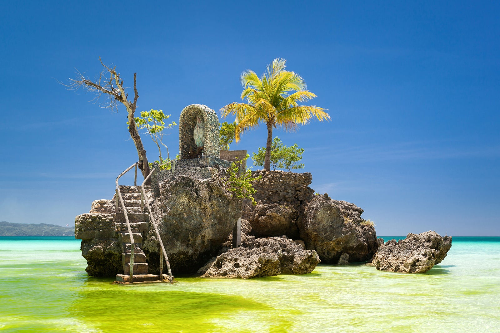

HOME
*Philippines Best Spots*
Welcome to the Pearl of the Orient Seas
Willy’s Rock is arguably Boracay’s most photographed landmark. It’s a rocky outcrop that forms a tidal island with a statue of the Virgin Mary on top of steps that are carved into the volcanic rock. Willy’s Rock gets its name from the nearby Willy’s Beach Club Hotel and is situated near Station 1 on Boracay’s 4 km stretch of white sandy beach.
 



Back